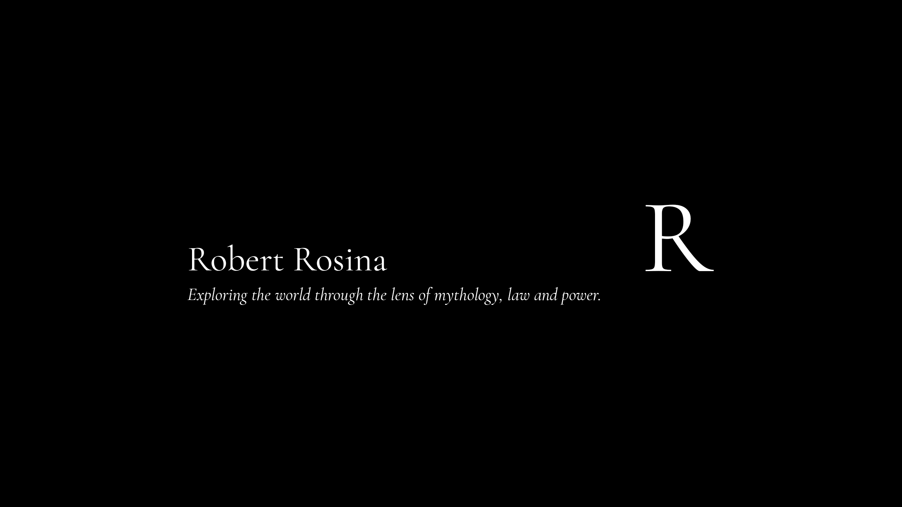

Legal Theorist • Author
Robert Rosina is a legal theorist whose work explores the cultural forces that shape law and power. His interdisciplinary research draws on legal philosophy, comparative mythology, media theory, and intellectual history, examining how foundational narratives—archetypes, myths, and rituals—reinforce systems of law and legitimacy. Admitted to the Supreme Court of New South Wales, he holds a Juris Doctor with distinction from Macquarie University—where he received the Highest Achiever award in both Alternative Dispute Resolution and Health Law—and a Bachelor of Media with distinction.
He is the creator of Wyrdcasters, a fictional universe rooted in Indo-European cosmology, and the author of the forthcoming novel Wyrcasters: Chaos in a Dying World.
YouTube Channel
Robert Rosina approaches modern life through a mythic lens—interpreting current events, cultural trends, and public figures as part of deeper symbolic patterns. Blending video essays, philosophical commentary, music development, and creative reflection, the channel explores mythology, law, and power in real time.
Recent Publications
Studies examining the intersections of myth, sanity, and metaphysical traditions.